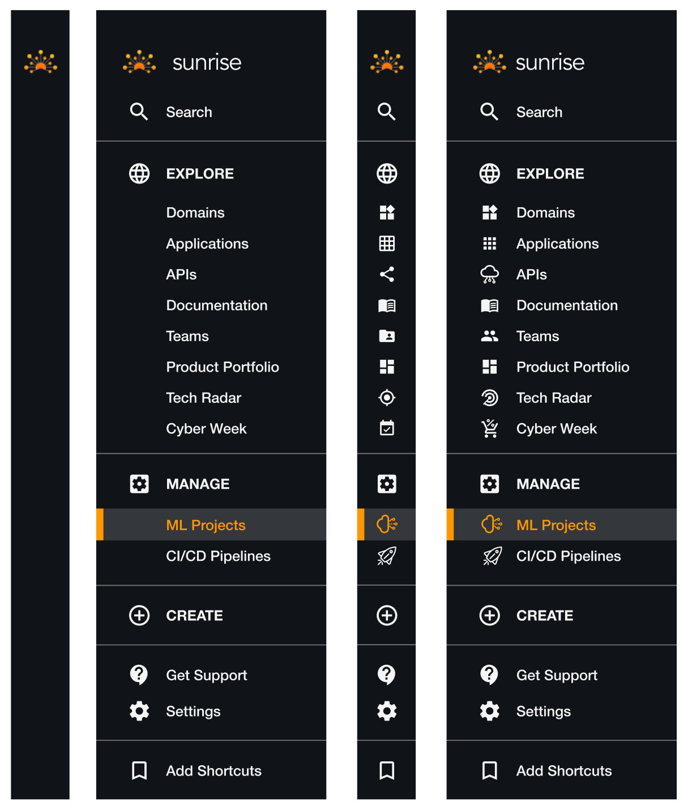
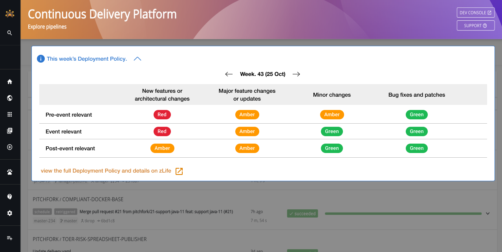
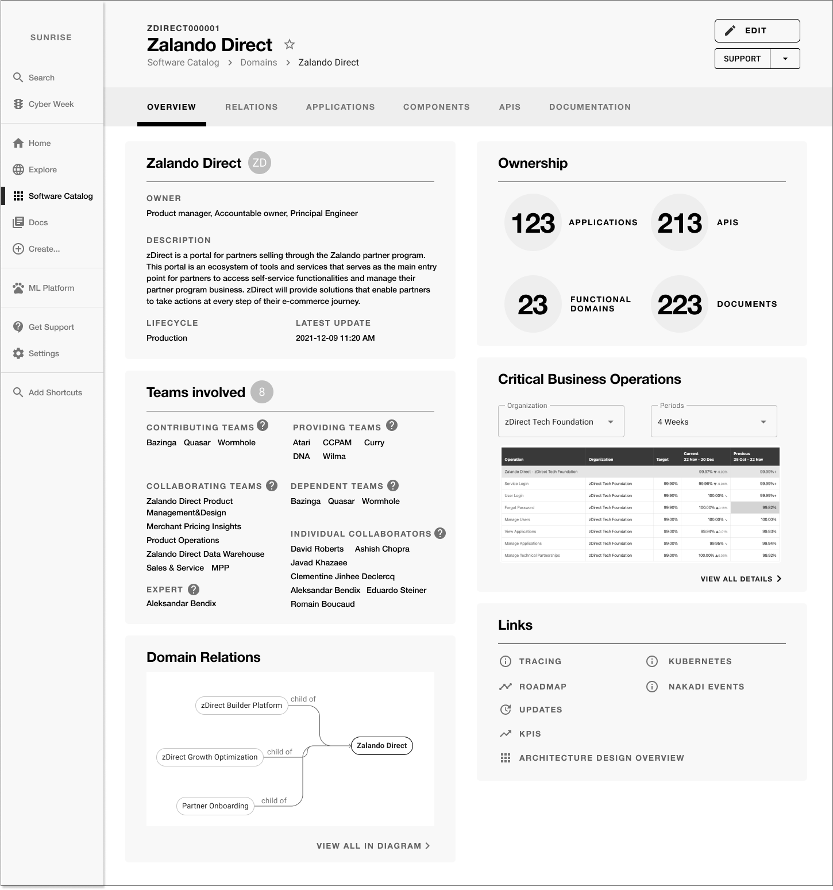
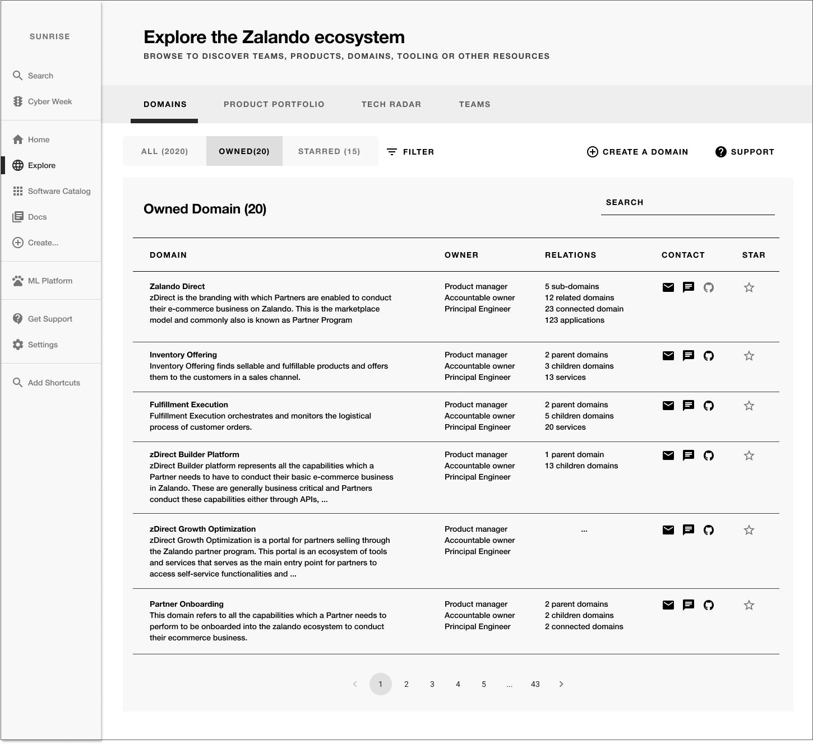
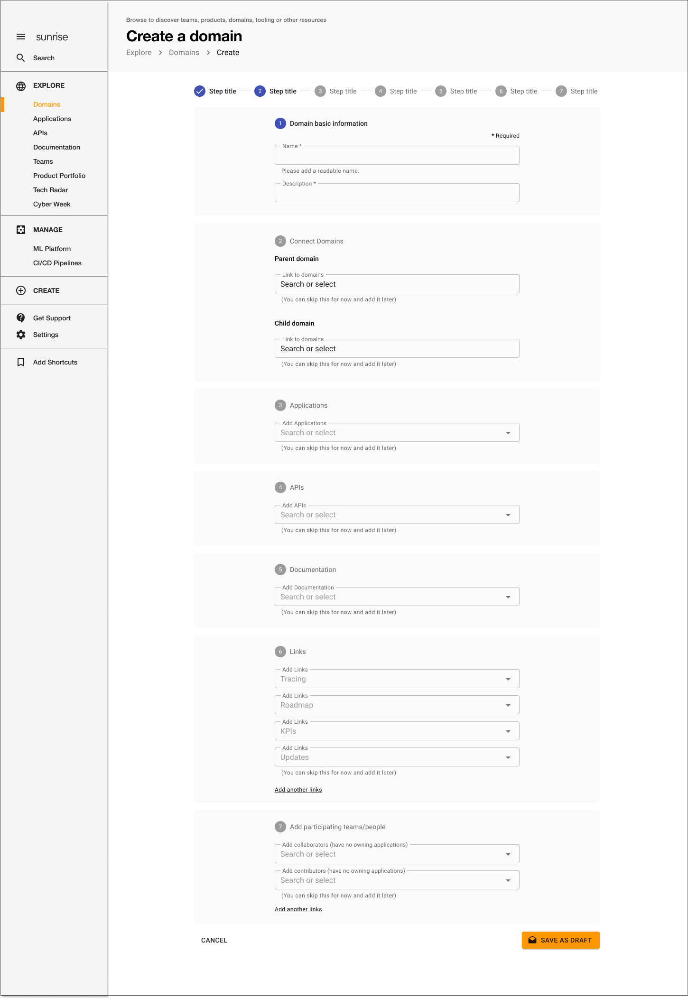
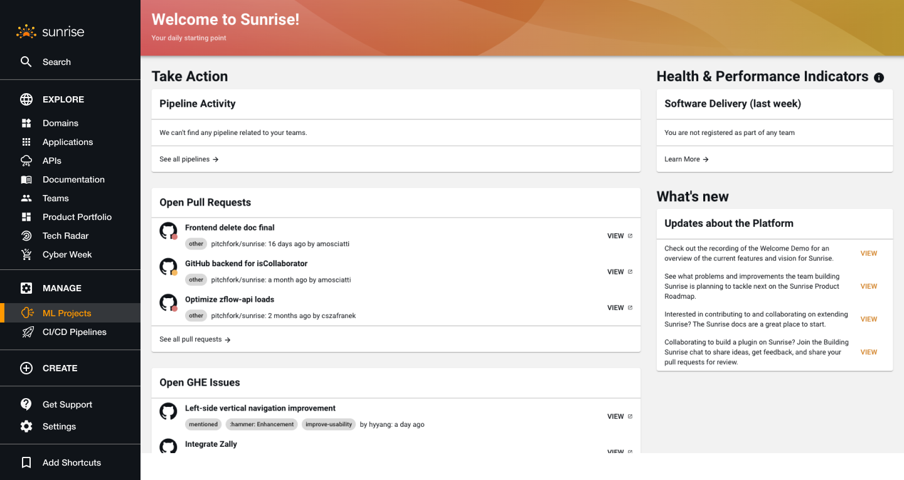
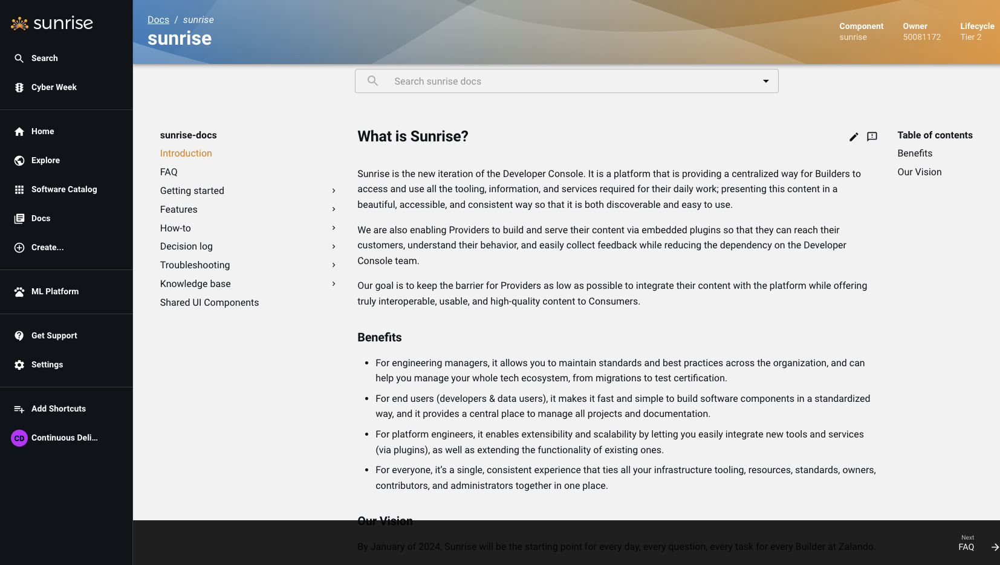

I led product design for Zalando's Builder Platform portal 'Sunrise', which offers internal tools for employees including developers, data scientists, and product managers to manage complex technical tools and documents more efficiently.







Background
The need for this domain emerged from extensive user feedback through Builder satisfaction surveys, Developer console surveys, and user interviews about discoverability, search, support, documentation, and knowledge management.
With 1800+ active Sunrise users classified as "Builders" and 3200+ monthly documentation users, the platform needed to support significant operational efforts including onboarding new team members, navigating ownerships, and collaborating across organizational boundaries—especially during critical events like Cyber Week, one of Zalando's biggest financial and operational events of the year.
My Role
- • Lead UX design process for the Builder Platform, ensuring user-centered design approaches throughout the product lifecycle
- • Collaborate with PMs, Engineers, and cross-functional teams to improve user experience in Builder Infrastructure
- • Conduct user research to understand builder needs, pain points, and workflows
- • Market and promote the product to increase awareness of the platform capabilities
MAJOR INITIATIVES & IMPROVEMENTS
Cyber Week 2021 Start Page
Designed a dedicated start page experience for Cyber Week 2021, Zalando's biggest operational and financial event of the year. Created centralized access point for critical tools and resources to support teams during high-pressure periods.
Streamlined critical workflows for high-impact events like Cyber Week
Navigation Improvement (Left-Side Vertical Navigation)
Redesigned the platform navigation structure with a left-side vertical navigation pattern to improve discoverability, reduce cognitive load, and provide consistent navigation patterns across the platform.
CDP (Continuous Deployment Pipeline) Improvement
Enhanced the Continuous Deployment Pipeline experience to streamline developer workflows, reduce deployment friction, and improve visibility into deployment status and history.
Domain Discovery & Creation
Designed intuitive workflows for discovering existing domains and creating new domains within the platform, improving organizational structure and reducing duplication of efforts.
Cohesive Creation Experience
Unified creation flows across different platform resources to provide a consistent, learnable pattern for builders creating new services, applications, or components.
Integration of API Linter into Sunrise Platform
Integrated API Linter directly into the Sunrise platform to help developers maintain API quality standards and catch issues early in the development process.
Successfully integrated key tools (API Linter) with measurable adoption
56 users actively using API Linter after implementation, demonstrating successful adoption and value delivery.
ACHIEVEMENTS
The team worked with a development process integrated with design process, ensuring close collaboration between design, product, and engineering throughout the entire product lifecycle. This approach enabled rapid iteration, continuous validation, and alignment on both user needs and technical feasibility.
Key Impact
Improved developer experience for 1800+ active builders across the organization
Unified fragmented tools and services into cohesive platform experience
Increased platform adoption and engagement through improved UX and discoverability
Enhanced onboarding experience and reduced learning curve for new team members
Key Takeaway
This work demonstrated the value of user-centered design in internal tooling—transforming complex technical platforms into intuitive, efficient experiences that empower developers and technical teams.
By leading comprehensive UX initiatives across multiple projects, collaborating closely with cross-functional teams, and grounding decisions in user research, I helped establish a more cohesive, discoverable, and effective Builder Platform that continues to support Zalando's technical organization in delivering high-quality products at scale.